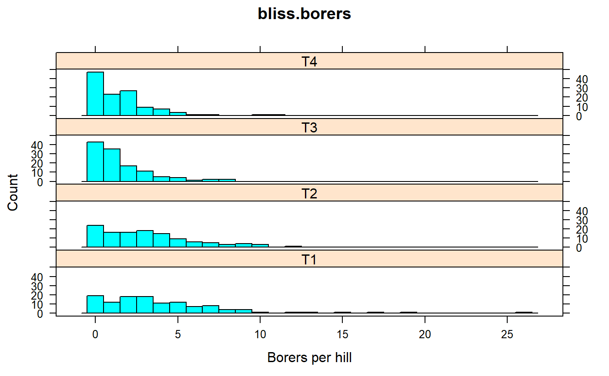
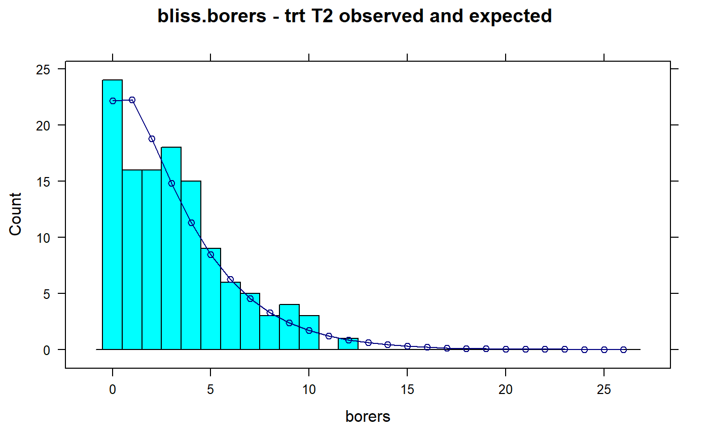
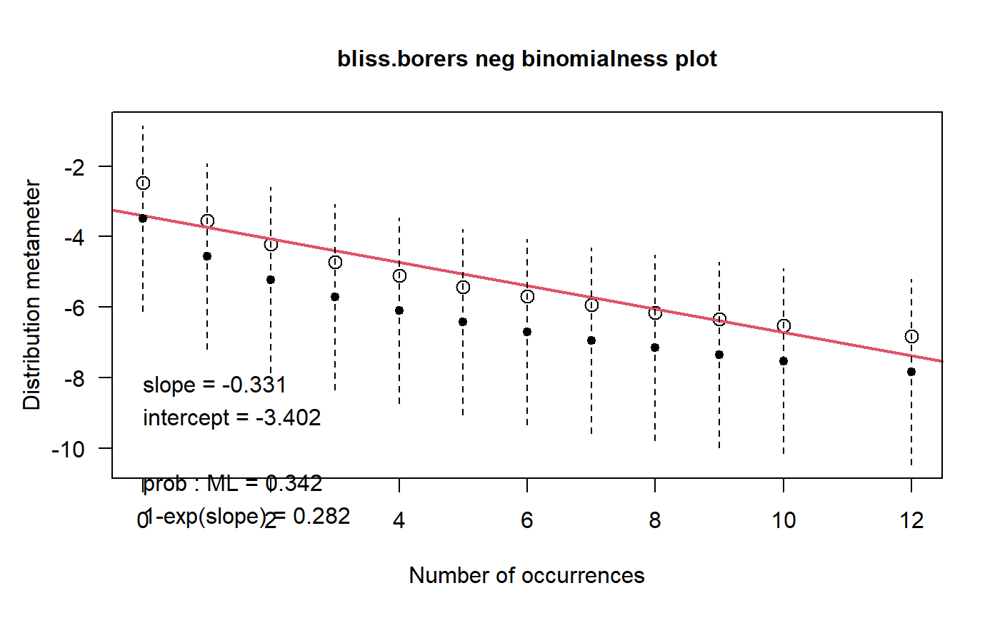
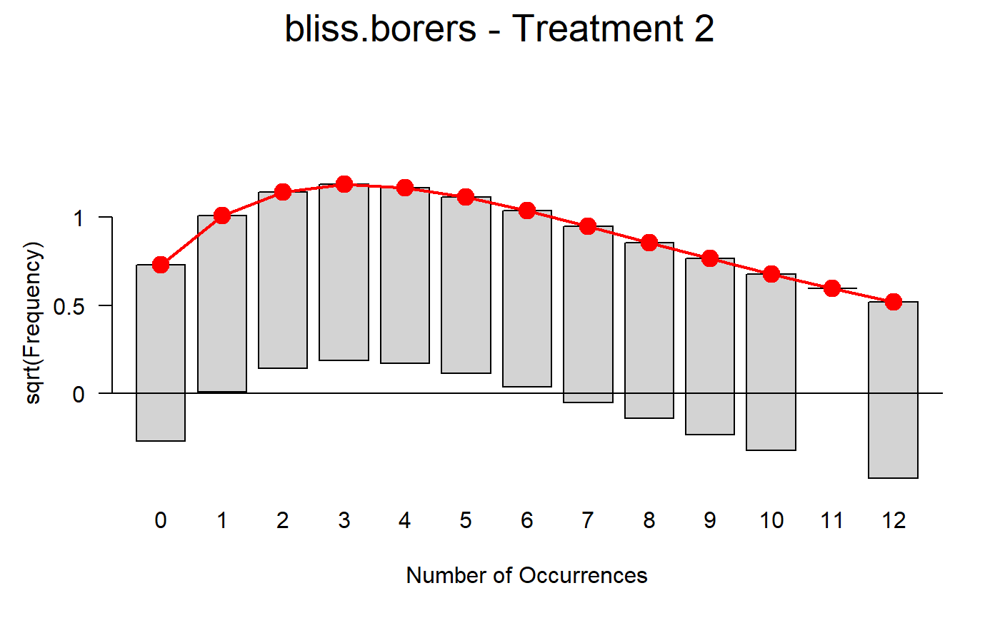

bliss.borers.RdCorn borer infestation under four treatments
A data frame with 48 observations on the following 3 variables.
borersnumber of borers per hill
treattreatment factor
freqfrequency of the borer count
Four treatments to control corn borers. Treatment 1 is the control.
In 15 blocks, for each treatment, 8 hills of plants were examined, and the number of corn borers present was recorded. The data here are aggregated across blocks.
Bliss mentions that the level of infestation varied significantly between the blocks.
C. Bliss and R. A. Fisher. (1953). Fitting the Negative Binomial Distribution to Biological Data. Biometrics, 9, 176--200. Table 3. http://doi.org/10.2307/3001850
Geoffrey Beall. 1940. The Fit and Significance of Contagious Distributions when Applied to Observations on Larval Insects. Ecology, 21, 460-474. Page 463. http://doi.org/10.2307/1930285
library(agridat) data(bliss.borers) dat <- bliss.borers # Add 0 frequencies dat0 <- expand.grid(borers=0:26, treat=c('T1','T2','T3','T4')) dat0 <- merge(dat0,dat, all=TRUE) dat0$freq[is.na(dat0$freq)] <- 0 # Expand to individual (non-aggregated) counts for each hill dd <- data.frame(borers = rep(dat0$borers, times=dat0$freq), treat = rep(dat0$treat, times=dat0$freq)) libs(lattice) histogram(~borers|treat, dd, type='count', breaks=0:27-.5, layout=c(1,4), main="bliss.borers", xlab="Borers per hill")libs(MASS)#> #>#> #> #>m1 <- glm.nb(borers~0+treat, data=dd) # Bliss, table 3, presents treatment means, which are matched by: exp(coef(m1)) # 4.033333 3.166667 1.483333 1.508333#> treatT1 treatT2 treatT3 treatT4 #> 4.033333 3.166667 1.483333 1.508333# Bliss gives treatment values k = c(1.532,1.764,1.333,1.190). # The mean of these is 1.45, similar to this across-treatment estimate m1$theta # 1.47#> [1] 1.47145# Plot observed and expected distributions for treatment 2 libs(latticeExtra) xx <- 0:26 yy <- dnbinom(0:26, mu=3.17, size=1.47)*120 # estimates are from glm.nb histogram(~borers, dd, type='count', subset=treat=='T2', main="bliss.borers - trt T2 observed and expected", breaks=0:27-.5) + xyplot(yy~xx, col='navy', type='b')#>#> #>#> #> #>dat2 <- droplevels(subset(dat, treat=='T2')) vcd::distplot(dat2$borers, type = "nbinomial", main="bliss.borers neg binomialness plot")# Better way is a rootogram g1 <- vcd::goodfit(dat2$borers, "nbinomial") plot(g1, main="bliss.borers - Treatment 2")